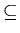
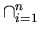
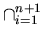

Induction
Problem: Let A1, A2, ...,
An, and B1, B2, ...,
Bn be sets. Then if Ai

Bi
for i = 1, 2, ..., n,
then

Ai
Bi .
Proof:
Basis Step: If n = 1, then
Ai
= A1
and
Bi
= B1 .
By the hypothesis
A1
B1 .
Hence
Ai
Bi ,
for n = 1 .
Induction: Assume that
Ai
Bi ,
for an arbitrary n .
Then

Ai
= (
Ai )
An+1
by the definition of
.
Since
Ai
Bi
by the induction hypothesis,
and
An+1
Bn+1
by the hypothesis, from property 7. of the
Hence
Ai
Bi
by the definition of
End of Proof